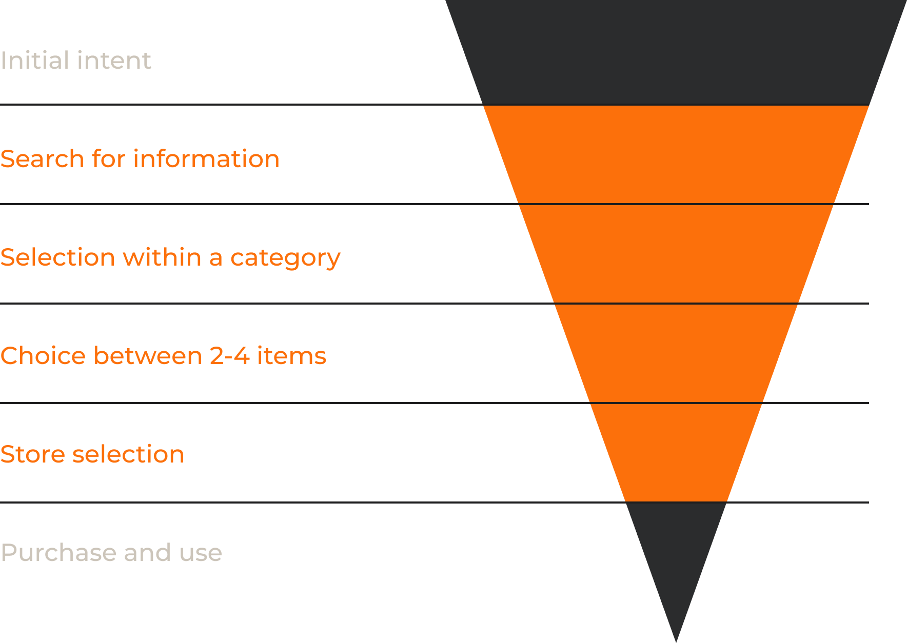
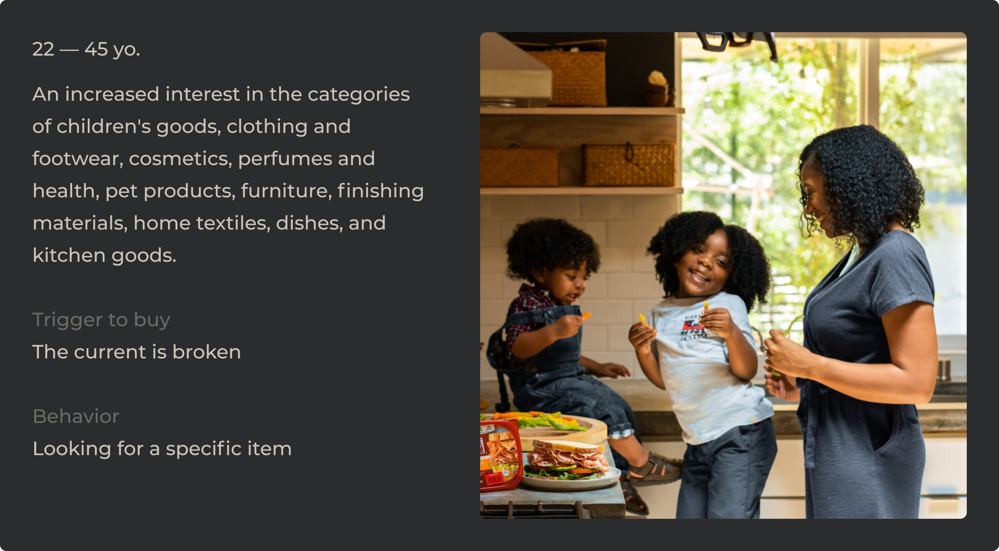
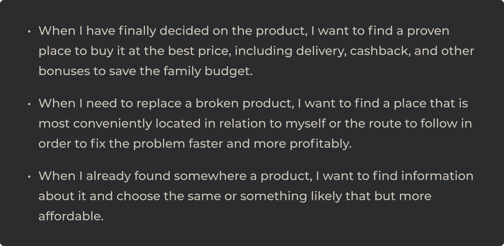

Refining mobile application for optimal product-market fit
Platform
iOS, Android, Huavei
Role
Senior Product Designer
Date
2019
Overview
Yandex.Market stands as a pivotal product within the diverse Yandex services ecosystem. It is a vibrant marketplace where sellers showcase their offerings, and potential buyers quickly discover products that cater to their needs. Each month, an impressive base of over 17 million users flocks to Yandex.Market, leveraging its platform to compare and narrow down its product choices.
The platform offers its users comprehensive product descriptions and opportunities to juxtapose models based on price, features, and more. A versatile filtering system aids users in refining their searches, while the invaluable recommendations from fellow users provide insights from real-world experiences.
Problem
Yandex.Market's prior mobile application was essentially a mirrored version of its web counterpart. In an effort to streamline operations and reduce developmental costs, the decision was made to transition to a cross-platform solution.
Although economically efficient, this approach presupposed the app content would be updated in tandem with the web version. However, the anticipated cost-efficiency brought an unintended consequence: a noticeable drop in the application's interaction speed. This downturn, in turn, led to significant user attrition, impacting revenue progressively each month. Ultimately, it led to a complete cessation of the mobile project's maintenance.
Revenue
Dropped 2 times
Google Play & App Store
Dropped to 2.4 / 2.7
Goal
In light of these challenges, an experimental team was formed, comprising myself as the product designer, an analyst, and a product manager. Our mandate was to identify a compelling product-market fit for the mobile application, providing justifiable grounds to rejuvenate the entire mobile service. Despite our earnest endeavors, the self-imposed technical constraints became our Achilles' heel. Signs increasingly pointed to an essential shift in our app development direction, including a foundational change to the technical heart of the platform. However, the necessary resources for such a transformative move eluded our product team.
App Store & Google Play
>4
DAU
3x
Process
Understanding the User Journey
Our pursuit is to refine the Yandex.Market mobile application commenced by dissecting the primary customer journey. At the heart of our product, the journey usually sprouts from an initial intent. For instance, when a potential user is scouting for new headphones, their journey typically initiates with internet searches for viable options. At this juncture, our service begins its interaction, assisting and guiding the user right up to the point of purchase.

Crafting personas through insights
Fortuitously, Yandex boasts a dedicated in-house research laboratory.
With its aid, I delved deep into understanding our primary target audience by scrutinizing their activities and behavior. From this rich data pool, I sculpted distinct personas. Most notably, our dominant user group consisted of mothers who primarily shopped to replace worn-out items and had a pronounced inclination towards goods of regular consumption.

Defining the 'Jobs To Be Done' (JTBD)
Having established our personas, the next pivotal step was understanding their motivations, challenges, and desired outcomes. I orchestrated interviews with representatives from each persona segment, distilling insights and framing the primary 'jobs to be done' pertinent to our mobile application.

User research: unearthing opportunities
Diving further into qualitative research unveiled an expansive market segment untouched by our digital services. It was a revelation that 80% of Russian consumers still favored offline shopping, gravitating towards local malls and shops in their vicinity over waiting for home-delivered parcels. This presented us with a compelling challenge: How do we transition this offline audience to our mobile app?
With this challenge at hand, I embarked on a field research mission, heading to a nearby mall to interact with these traditional shoppers. So the primary objective was to decode their shopping behaviors and validate my hypotheses based on the previously established 'jobs to be done'.
Solution
Deciphering the offline shopper's mindset
A pivotal insight emerged after rigorous research and first-hand interactions with traditional shoppers. A significant portion of this audience was engrossed in a tedious task: hopping from one offline store to another, comparing prices and characteristics of similar, if not identical, products. This behavior presented a unique opportunity.
Bridging the online-offline divider
Harnessing the power of AI and image recognition, we evolved the Yandex.Market mobile applications to simplify this process for our users. The revamped application empowered customers to simply snap photos of products in brick-and-mortar stores. Within moments, they could contrast their chosen products with others, ensuring they bagged the best deal from a nearby mall or online.
This innovative feature seamlessly blurred the boundaries between traditional and digital shopping experiences. It offered users the tactile and immediate satisfaction of in-person shopping, complemented by the convenience and extensive choice of online browsing. As a result, customers could kickstart their shopping journey in a physical store and effortlessly continue it from the comfort of their homes.
Results
Explosive user growth
We didn't just witness a spike in new user registrations; the daily active users skyrocketed, increasing tenfold! This surge wasn't merely a transient spike but a testament to our app's enhanced user experience and value proposition.
Team expansion
As a direct consequence of our burgeoning success, our team grew exponentially. From a modest group, we swelled to an impressive roster of 40 dedicated members in just 18 months. This growth was not just in numbers but also in the depth of expertise and specialization we could now tap into.
Historic milestone
This phase of the app's evolution wasn't just another update — it was arguably the most pivotal chapter in its history. The overwhelming success realigned the company's priorities, catapulting the mobile app's development branch to the forefront of our strategic focus.
Ratings skyrocket
Reflecting our users' renewed trust and satisfaction, our app's ratings underwent a dramatic transformation. From a modest 2.8, we climbed the ladder of acclaim to achieve a stellar rating of 4.7 across major app stores. This wasn't just a number, but a testament to our commitment to excellence and user-centricity.